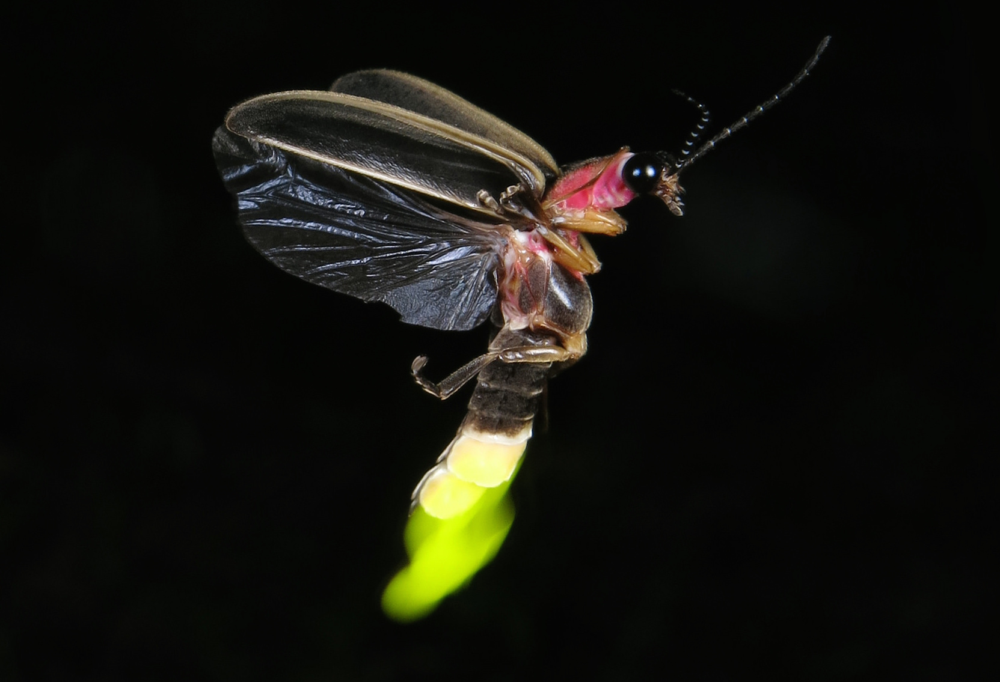
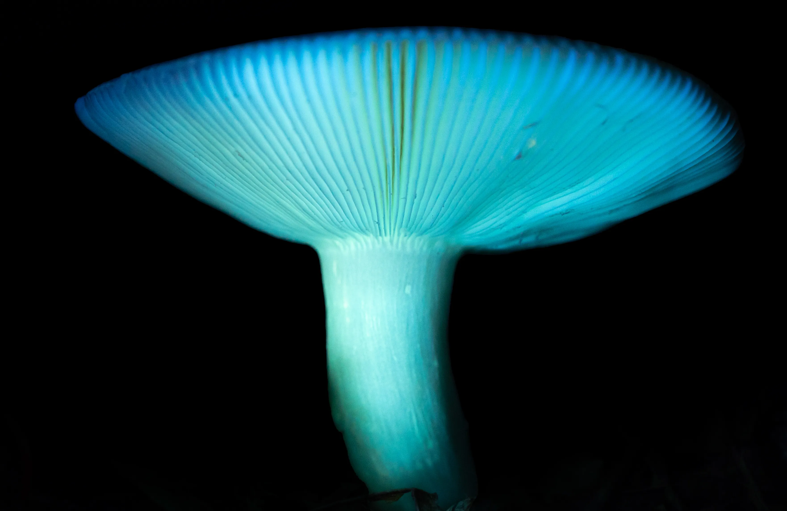
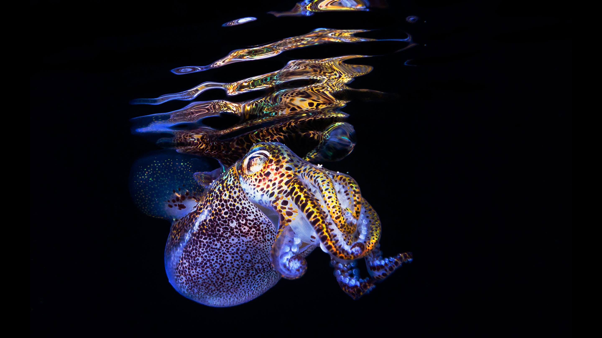
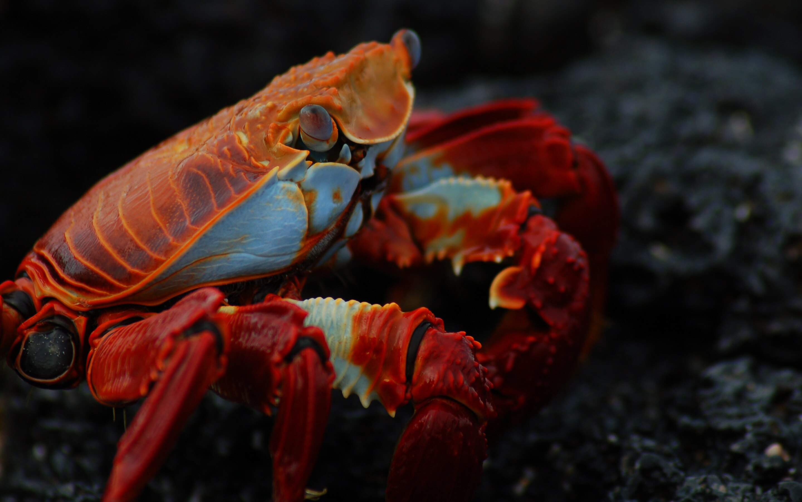

Introduction
Bioluminescence is the emission of light during a chemiluminescence reaction by living organisms.
Bioluminescence occurs in multifarious organisms ranging from marine vertebrates and invertebrates,
as well as in some fungi, microorganisms including some bioluminescent bacteria, dinoflagellates and
terrestrial arthropods such as fireflies.
In most cases, the principal chemical reaction in bioluminescence involves the reaction of a substrate
called luciferin and an enzyme, called luciferase. In all characterized cases, the enzyme catalyzes the
oxidation of the luciferin resulting in excited state oxyluciferin, which is the light emitter of the reaction.
In evolution, luciferins vary little: one in particular, coelenterazine, is found in 11 different animal phyla.
Conversely, luciferases vary widely between different species. Bioluminescence has arisen over 40 times in
evolutionary history.
700+
Animal Genera Can Glow
76%
Of Deep Sea Animals Glow
40
Times It Evolved Independently

Different types of luciferin molecules found in various bioluminescent organisms. When oxidized by luciferase enzymes, these molecules produce light.
Bioluminescent Organisms
Bioluminescence occurs widely among animals, especially in the open sea, including fish, jellyfish,
comb jellies, crustaceans, and cephalopod molluscs; in some fungi and bacteria; and in various
terrestrial invertebrates. More than 700 animal genera have been recorded with light-producing species.
In marine coastal habitats, about 2.5% of organisms are estimated to be bioluminescent, whereas in
pelagic habitats in the eastern Pacific, about 76% of the main taxa of deep-sea animals have been found
to be capable of producing light.

Dinoflagellates
The most frequently encountered bioluminescent organisms in the surface layers of the sea,
responsible for the sparkling luminescence sometimes seen at night in disturbed water. At least
18 genera of these phytoplankton exhibit luminosity.

Bacterial Symbioses
Most luminous bacteria inhabit the sea, dominated by Photobacterium and Vibrio. Many are found
in symbiotic relationships that involve fish, squids, crustaceans as hosts.

Deep-Sea Fish
About 1,500 fish species are known to be bioluminescent; the capability evolved independently
at least 27 times. They use light to lure prey or hide from predators.

Cephalopods
Many cephalopods, including at least 70 genera of squid, are bioluminescent. Some use bacterial
bioluminescence for camouflage by counterillumination.

Fireflies
Fireflies use light to attract mates. In one system, females emit light from their abdomens to
attract males; in the other, flying males emit signals to which the sedentary females respond.

Fungi
Species in the genera Armillaria, Mycena, Omphalotus, and others emit usually greenish light
from the mycelium, cap and gills. This may attract night-flying insects and aid in spore dispersal.
Ecological Functions
The uses of bioluminescence by animals include counterillumination camouflage, mimicry of other animals
to lure prey, and signaling to other individuals of the same species, such as to attract mates.
Steven Haddock et al. list definite functions in marine organisms: defensive functions of startle,
counterillumination, misdirection, distractive body parts, burglar alarm, and warning; offensive functions
of lure, stun or confuse prey, illuminate prey, and mate attraction.

Counterillumination Camouflage
In many animals of the deep sea, including several squid species, bacterial bioluminescence is used
for camouflage by counterillumination, in which the animal matches the overhead environmental light
as seen from below. Photoreceptors control the illumination to match the brightness of the background.

Attraction
Fireflies use light to attract mates. In the marine environment, use of luminescence for mate attraction
is chiefly known among ostracods, small shrimp-like crustaceans. A polychaete worm, the Bermuda fireworm
creates a brief display, a few nights after the full moon, when the female lights up to attract males.

Defense
Some squid and small crustaceans use bioluminescent chemical mixtures or bacterial slurries in the same
way as many squid use ink. A cloud of luminescent material is expelled, distracting or repelling a potential
predator, while the animal escapes to safety.

Mimicry
Bioluminescence is used by a variety of animals to mimic other species. The cookiecutter shark uses
bioluminescence to camouflage its underside by counter-illumination, but a small patch remains dark,
appearing as a small fish to lure larger predatory fish.
Human Applications
Bioluminescent organisms are a target for many areas of research. Luciferase systems are widely used in
genetic engineering as reporter genes, and for biomedical research using bioluminescence imaging.
Discovery
Green Fluorescent Protein (1961)
Osamu Shimomura discovered and isolated green fluorescent protein (GFP) from the jellyfish
Aequorea victoria. This groundbreaking discovery would later win the Nobel Prize in Chemistry
in 2008, shared with Martin Chalfie and Roger Y. Tsien for their development of GFP as a tool
for biological research.

Engineering
Genetic Applications (1986)
The firefly luciferase gene was first used for research using transgenic tobacco plants.
This marked the beginning of widespread use of luciferase-based systems as reporter genes
to track gene expression in real-time, revolutionizing molecular biology research.

Medicine
Medical Research & Imaging
Bioluminescence imaging became widely adopted for non-invasive tracking of cellular processes
and disease progression in living organisms. Researchers began exploring bioluminescent activated
destruction as an experimental cancer treatment, opening new possibilities in targeted therapy.

Lighting
Sustainable Solutions (2016)
Glowee, a French company, started selling bioluminescent lights for shop fronts and street signs.
This pioneering effort demonstrated that engineered bioluminescence could one day be used to
reduce the need for traditional street lighting, offering an eco-friendly alternative.

Innovation
Glowing Plants (2020)
In April 2020, scientists successfully genetically engineered plants to glow more brightly
using genes from the bioluminescent mushroom Neonothopanus nambi. These plants convert
caffeic acid into luciferin, creating self-sustaining bioluminescent organisms.